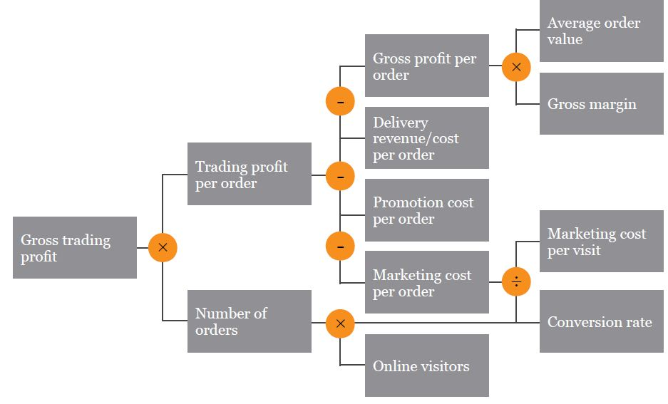

Per Dennis et al. (2012),
BPA is focused on making current processes more efficient through automation; it requires thorough analysis of the current system.
This entails asking current system users about problems they face or features they desire. Problems identified with this technique are often related to UI and their resolution produces little if any business value.
This entails asking current system users to explore the root causes of problems they've identified (since these problems may only be symptoms). Root causes may be uncovered by asking "Why?" five times; causal relationships may be represented as a hierarchy, web, or fishbone/Ishikawa diagram.
BPI goes beyond increased efficiency to the realm of increased effectiveness, for instance taking advantage of new opportunities and technologies.
First, major processes are timed; second, all individual steps in those processes are timed. If the sum of step durations is smaller than the overall duration, this indicates a need for improvement --- which may be achieved through integration (fewer people involved in doing the work across its lifecycle) or parallelization (steps being done concurrently).
Steps in a process are costed, and improvement efforts are focused on the costliest step.
Examine competitors to identify performance targets and process improvements.
BPR is a radical upending of current business processes and systems, so spends little time analyzing them.
Trying to think about the business from the perspective of users' ultimate goals and needs (recognizing that your product or service may be only a means to an end).
Reviewing existing and emerging technologies and asking how they might be applied in your company (either as a process improvement or a product).
Systematically (but as a thought exercise) eliminating each step in a process, and asking what the implications are.
These notes are based on Jeevon Powell's class, Process Improvement Tools.
See notes on systems modeling.
These notes are based on Christian Terwiesch's Coursera class, Intro. to Operations Management.
Strategy and assessment often reference four operational dimensions:
Between any two dimensions, there may be a tradeoff; obtain this curve by locating the performance of existing companies for any two dimensions. Then the question is whether your company is operating on the frontier or within it.
Business processes underlie performance. One way to measure them: graph flow units vs. time, showing cumulative inflow and cumulative outflow. Then:
Create a process flow diagram aka value stream map showing how flow units are transformed from inputs to outputs by process activities. Represent wait times, lines, or inventories with triangles, and activities with boxes (labeled with activity time in units, and m, the number of workers or resources). Then:
Realistically, processing times will vary from flow unit to flow unit. Flow units may even follow different pathways through all possible process activities. So, how to find the bottleneck and determine the flow rate? Depict multiple flow units on same process diagram, symbolized as types of flow units, then:
Why focus on this when labor seems to contribute less to modern firms’ costs? —because many firms keep labor costs off their balance sheet by ‘outsourcing’ them to their suppliers. If you account for labor in the cost of goods supplied, the role of labor becomes evident.
Inventory=Flow_rate*Flow_time. Given any two variables, can solve for a third (especially flow time); also, can decide how to manipulate outcomes by adjusting a variable. Note that flow time here is essentially average flow time, a line fitted to the actual data recorded from observations of inflow and outflow. “Not an empirical law; to prove it, we need to turn to stochastic optimization.”
Cost_Of_Goods_Sold/Inventory. Gives the amount of time that a flow unit spends inside the process; comes from Little’s law (where COGS=Flow_rate). High inventory turns can dramatically reduce inventory costs (capital, storage, obsolescence). Per unit inventory costs=Annual_inventory_cost/Inventory_turns.
Motivating question here is why should there be inventory? What are the drivers of inventory? (Note that, per Little’s law, these same factors are implicit drivers of flow time.) Contrast McDonald’s and Subway—not all companies use inventory to increase flow rate; there are make-to-stock vs. make-to-order strategies.
Frederick Winslow Taylor (1911), Principles of Scientific Management. . In general, (multifactor) productivity is a ratio of output_produced / input(s)_used.
KPI trees are about “visualizing the relationship between operational variables and the financial bottom line, and are also the starting point for sensitivity analysis wherein we identify those operational variables that have the largest impact.” Map out dependencies between variables, then take the partial derivative of the terminal KPI w/r/t an operational variable or evaluate using a spreadsheet.

Dennis, A., Haley Wixom, B., & Tegarden, D. (2012). Requirements determination. In Systems analysis and design: An object oriented approach with UML (4th ed., pp. 109–152). Hoboken, NJ: Wiley.